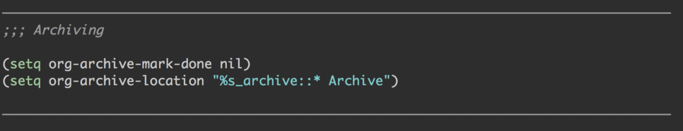

Emacs 的一些技巧
Table of Contents
- 1. 设置一个标记(Mark)
- 2. 快速的选中一行
- 3. org mode 发布网站的问题
- 4. Apropos
- 5. 跳到本行第一个非空格字符上
- 6. 特殊字符与数字键交换
- 7. 在 Emacs 中禁用鼠标
- 8. 交换 C-w 和 M-w 的命令绑定
- 9. 截图
- 10. 拖拽图片到 Org mode
- 11. Emacs 的键盘宏
- 12. new-line-and-indent
- 13. Butterfly
- 14. 快速生成有序序列
- 15. C-x r t string-rectangle
- 16. MULTIPLE CURSORS
- 17. xah math input (here)
- 18. 自动在中英文之间添加空格
- 19. 禁用特定模式下的快捷键绑定
- 20. &key
- 21. Tramp 的使用
- 22. Emacs 中行操作
- 23. Emacs 模糊打开文件
- 24. Emacs Dired mode
- 25. 定义 toggle/cycle command（参考）
- 26. Emacs –script
- 27. Install and Update packages
- 28. Emacs List 的操作
- 29. Elisp 代码文件分割线
- 30. 使用 Deft 快速的记笔记
- 31. MULTIPLE CHOICES IN YASNIPPETS
- 32. org-indent-mode
- 33. zencoding mode
- 34. expand & mark
- 35. 下载远程图片到 Org 文件
1. 设置一个标记(Mark)
命令是 set-mark-command, 绑定的快捷键为 C-@, C-., C-SPC，推荐使用 C-. 。 因为 C-SPC 与输入法有冲突，C-@比较难按。
再次按下 C-. 会取消标记。
设置矩形区域标记，使用 C-x <spc>, visit here.
2. 快速的选中一行
现在一行的开头设置一个 mark ，然后移动到行尾。即：
C-a C-. C-e
同样的原理，我们可以在任何一个位置设置一个 mark，然后选中其前面或后面的文本。
3. org mode 发布网站的问题
在 org 中有时需要写类似这种 A_B 的东西，但是在解释成 html 后就成了下标了。
解决的方法可以写成 #+OPTIONS: ^:nil
另外一个问题时，在使用 publish 发布的时候，如何禁用 cache，可以这样：
(setq org-publish-use-timestamps-flag nil)
4. Apropos
Finally, there are two powerhouse commands that you’ll want to
turn to when all else fails. For example, when you’re fairly
certain that Emacs has commands for doing something, but aren’t
able to find it using any of the usual methods. Say, you want to
learn how to edit rectangular regions in Emacs, but can’t remember
the commands. That’s where the apropos commands come in. Two
important ones are C-h a, for apropos-command, and C-h d, for
apropos-documentation.
For example, pressing C-h a RET rectangle RET will list all
commands containing the string rectangle, along with their key
bindings. Then you can quickly recall that the key binding for
kill-rectangle is C-x r k, and that most of the other rectangle
commands also begin with C-x r. Note that the “pattern” you
provide to these apropos commands can also be a regular
expression.
5. 跳到本行第一个非空格字符上
对应的命令是 back-to-indentation ，默认绑定的快捷键是 M-m 。
6. 特殊字符与数字键交换
在几乎所有的语言中，我们要输入很多的特殊字符，例如
! @ # $ % ^ & * ( )
但是这种字符的输入有些麻烦，需要按住 shift 键才行，下面我们就优化一下这种操作。
(defvar *unshifted-special-chars-layout*
'(("1" "!") ; from -> to
("2" "@")
("3" "#")
("4" "$")
("5" "%")
("6" "^")
("7" "&")
("8" "*")
("9" "(")
("0" ")")
("!" "1")
("@" "2")
("#" "3")
("$" "4")
("%" "5")
("^" "6")
("&" "7")
("*" "8")
("(" "9")
(")" "0")))
(defun mb-str-to-unibyte-char (s)
"Translate first multibyte char in s to internal unibyte representation."
(multibyte-char-to-unibyte (string-to-char s)))
(defun remap-keyboard (mapping)
"Setup keyboard translate table using a list of pairwise key-mappings."
(mapcar
(lambda (mb-string-pair)
(apply #'keyboard-translate
(mapcar #'mb-str-to-unibyte-char mb-string-pair)))
mapping))
(remap-keyboard *unshifted-special-chars-layout*)
这里的按键映射不一定按照这个来配置，你可以选择几个比较常用的设置一下。
7. 在 Emacs 中禁用鼠标
为什么要在 Emacs 中禁用鼠标？我想对于 Macbook 用户来说，这是很有意义的。 就我来说，我在编辑的时候经常会不经意的碰到触摸板，这就导致我的光标经常会跑到其他地方，然而我要找到我刚才编辑的地方就会很麻烦。虽然这种事情发生的频率不高，但是非常的烦人。
另外一点，不用鼠标也有其他的好处。这会强迫我们使用键盘去操作所有的事情，通常这样会更加的快。如果我们习惯了使用键盘操作所有的事情，我相信效率上会提高一大截。
设置的代码，我是直接 copy 的这里。
(define-minor-mode disable-mouse-mode
"A minor-mode that disables all mouse keybinds."
:global t
:lighter "Mouse🐭"
:keymap (make-sparse-keymap))
(dolist (type '(mouse down-mouse drag-mouse
double-mouse triple-mouse))
(dolist (prefix '("" C- M- S- M-S- C-M- C-S- C-M-S-))
;; Yes, I actually HAD to go up to 7 here.
(dotimes (n 7)
(let ((k (format "%s%s-%s" prefix type n)))
(define-key disable-mouse-mode-map
(vector (intern k)) #'ignore)))))
8. 交换 C-w 和 M-w 的命令绑定
在编辑的过程中我发现，复制一块区域的次数要多于使用剪切操作。所以交换了这两个按键。
因为 C-w 绑定到了 whole-line-or-region-kill-region 上，而 M-w 到了 whole-line-or-region-kill-ring-save
(global-set-key (kbd "C-w") 'whole-line-or-region-kill-ring-save)
(global-set-key (kbd "M-w") 'whole-line-or-region-kill-region)
9. 截图
最近在上公开课的时候，经常需要停下来记录一些重点，这就导致效率有些低，所以我想能不能先截图。这样是快了很多，但是对我来说也不方便。 因为我是使用的 Org 来记录的笔记，所以要找到刚才截的图然后插入到 Org 笔记中就不是很方便了，而且图片存放的文件需要手动的建立。所以这些能自动化就好了。
我在网上找了一个截图的函数，稍加修改了一下。
;;; https://emacs-china.org/t/org-mode/79
(defun my-org-screenshot ()
"Take a screenshot into a time stamped unique-named file in the
same directory as the org-buffer and insert a link to this file."
(interactive)
(org-display-inline-images)
(setq filename
(concat
(make-temp-name
(concat (file-name-directory (buffer-file-name))
"/imgs/"
(format-time-string "%Y%m%d_%H%M%S_")) ) ".png"))
(unless (file-exists-p (file-name-directory filename))
(make-directory (file-name-directory filename)))
; take screenshot
(if (eq system-type 'darwin)
(progn
(call-process-shell-command "screencapture" nil nil nil nil " -s " (concat
"\"" filename "\"" ))
(call-process-shell-command "convert" nil nil nil nil (concat "\"" filename "\" -resize \"50%\"" ) (concat "\"" filename "\"" ))
))
(setq relative-dir (concat "./imgs/" (file-name-nondirectory filename)))
(if (file-exists-p filename)
(insert (concat "[[file:" relative-dir "]]")))
(org-display-inline-images)
)
10. 拖拽图片到 Org mode
有时候想把电脑上的图片引入到 Org 中会比较繁琐，所以就想能不能直接拖进来呢？后来找了个函数改了改。 这个函数会把图片 copy 到当前目录的 imgs 子目录下，如果没有 imgs 需要先创建一个。当然，你可以改下面的函数来满足自己的需求。
;; drag file to org mode
;; http://kitchingroup.cheme.cmu.edu/blog/2015/07/10/Drag-images-and-files-onto-org-mode-and-insert-a-link-to-them/
(defun my-dnd-func (event)
(interactive "e")
(goto-char (nth 1 (event-start event)))
(x-focus-frame nil)
(let* ((payload (car (last event)))
(type (car payload))
(fname (cadr payload))
(img-regexp "\\(png\\|jp[e]?g\\|svg\\)\\>"))
(cond
;; insert image link
((and (eq 'drag-n-drop (car event))
(eq 'file type)
(string-match img-regexp fname))
(dired-copy-file fname (format "./imgs/%s" (file-name-nondirectory fname)) t)
(insert "#+ATTR_HTML: :width 100%\n")
(insert (format "[[%s]]" (format "./imgs/%s" (file-name-nondirectory fname))))
(org-display-inline-images t t))
;; regular drag and drop on file
(t
(error "I am not equipped for dnd on %s" payload)))))
11. Emacs 的键盘宏
使用键盘宏可以极大的提高我们的效率。我感觉需要单独写一个文章来介绍这个技巧。 这里介绍了如何使用，保存，以及绑定快捷键。具体看这里。
12. new-line-and-indent
在写代码的时候，我们经常需要自动缩进，而不是回到下一行的开头。这时我们就需要这个函数了， new-line-and-indent 。我们可以直接使用快捷键 C-j 。也可以绑定到 RETURN 键上。
(add-hook 'lisp-mode-hook '(lambda ()
(local-set-key (kbd "RET") 'newline-and-indent)))
13. Butterfly
M-x butterfly
(animate-string "Hello world"
(/ (window-height) 2) (- (/ (window-width) 2) 12))
14. 快速生成有序序列
如果我们想生成如下效果的序列：
Step 1 of 5: ...
Step 2 of 5: ...
Step 3 of 5: ...
Step 4 of 5: ...
Step 5 of 5: ...
我们就可以借助键盘宏了。
- C-x C-k C-f 例如 "- Step %d of 5:"
- 按下 F3 开始宏记录
- 再次按下 F3 开始插入第一个计数（默认为 0），按下 C-x C-k C-c 可以更改默认值
- 按 return 键，到下一行
- 按下 F4 结束宏记录
- 然后多次按 F4 就可以了
或者按 C-u <次数> F4
根据这个我写了一个函数可以自动做这件事了：
(defun auto-sequence (format start end) (interactive "sSequence format is? \nnEnter start number: \nnEnter end number:") (progn (kmacro-set-format format) (kmacro-set-counter start) (while (< start (+ 1 end)) (execute-kbd-macro (read-kbd-macro "<f3> RET")) (setq start (+ 1 start))) ))我们只需要提供 format, start number, end number 就可以了。
最近，又发现了一个文章：正则替换也能玩出花来。这里介绍了通过正则替换来做，也很方便。
15. C-x r t string-rectangle
这里我们说下 C-x r t 这个命令。举个例子一看就明白了。
var a = 1
var b = 2
var c = 3
改成
this.a = 1
this.b = 2
this.c = 3
我们就可以用这个命令了。具体的可以看 这里。
16. MULTIPLE CURSORS
17. xah math input (here)
有了这个我们就可以非常方便的输入一些常用的数学符号，而不是使用 latex 插入。 例如我们输入 字母 p，然后按 S-<SPC> 就转化为了 π。
在后来发现在写代码的时候经常会按到这个快捷键，所以我只在 org mode 中打开。
(add-hook 'org-mode-hook #'xah-math-input-mode-on)
18. 自动在中英文之间添加空格
我们可以使用 pangu-spacing 这个 package。
19. 禁用特定模式下的快捷键绑定
例如，下面这个禁用了 org mode 默认的快捷键绑定，然后使用自己设置的快捷键绑定。
(define-key org-mode-map (kbd "C-,") nil)
20. &key
(defun* hello (&key a b c)
(message (format "%s-%s-%s" a b c)))
(hello :a 1
:b 2
:c 3)
21. Tramp 的使用
在 Emacs 通过 tramp 打开远程 server 文件就像打开本地文件一样操纵。 因为 tramp 是 build in package，所以我们可以直接用。
- C-x C-f
/ssh:user@server
例如 /ssh: ubuntu@10.222.122.11
如果在./ssh/config 中添加了 HOST，例如 test。
- C-x C-f
- /ssh:test
22. Emacs 中行操作
23. Emacs 模糊打开文件
在之前我一直使用 C-x C-f 打开文件，它默认绑定的是 counsel-find-file。这种方式需要我们一层层的输入目录很慢，所以我希望能有一个比较快的方式。我想到了 projectile 可以做这件事，所以我把 C-x C-f 绑定到了 projectile-find-file-in-known-projects 这个函数上了。
这样比如我想打开 ~/workspace/github/hello/world.org 这个文件。 我现在可以在 C-x C-f 后，输入 hello world 。
如果我们这样设置的话会遇到一个问题：这个命令非常的慢。这时我们需要将 projectile 的 cache 打开 (reference):
(setq projectile-enable-caching t)
现在就很完美了
24. Emacs Dired mode
25. 定义 toggle/cycle command（参考）
如果我们有两个状态要切换，比较简单：
(defun yd-toggle-move-indent ()
(interactive)
(if (get 'yd-toggle-move-indent 'state)
(progn
(call-interactively 'move-beginning-of-line)
(put 'yd-toggle-move-indent 'state nil))
(progn
(call-interactively 'back-to-indentation)
(put 'yd-toggle-move-indent 'state t))))
(define-key map (kbd "C-a") 'yd-move-indent)
这个例子中实现了通过多次按 C-a 来在当前行的开始位置与非空字符之间切换。
但是如果有多个状态呢？这里我们就需要使用数字或字符串来表示状态了。
(defun yd-toggle-test ()
(interactive)
(if (not (get 'yd-toggle-test 'state))
(put 'yd-toggle-test 'state "beginning"))
(cond
((string= "beginning" (get 'yd-toggle-test 'state))
(call-interactively 'move-beginning-of-line)
(put 'yd-toggle-test 'state "indentation"))
((string= "indentation" (get 'yd-toggle-test 'state))
(call-interactively 'back-to-indentation)
(put 'yd-toggle-test 'state "end"))
((string= "end" (get 'yd-toggle-test 'state))
(call-interactively 'move-end-of-line)
(put 'yd-toggle-test 'state "beginning"))
))
这个函数用来使光标循环在行的开头，非空字符和结尾位置。
另外，它可以在切换 backgroud，单词的大小写（*）等中使用。 我在切换大小写中也使用了 M-c 命令。
26. Emacs –script
我们可以将一个 elisp 文件作为一个脚本执行。
emacs --script test.el
27. Install and Update packages
Type M-x list-packages to open the package list. Press ‘i’ to mark for installation, ‘u’ to unmark, and ‘x’ to perform the installation. Press ‘RET’ to read more about installing and using each package. hit Uto mark available upgrades, then review to decide if there are any I don't want to pick up. Then x to upgrade.
28. Emacs List 的操作
29. Elisp 代码文件分割线
类似的效果如下

我们可以通过在代码中输入L 使用命令 C-q C-l。这样可以使得我们的代码清晰一些。
30. 使用 Deft 快速的记笔记
最近发现，有些东西不适合展示在 blog 中。例如一些摘抄，记录等等。我的要求是：当我想查的时候能够快速的查询到，而记录的时候又能快速的记录。 Deft 正是一个可以满足我需求的 mode。关于它的使用 github 上有介绍，不多说。我的快捷键绑定是 C-x d
这里提下如何高效的利用这个工具，Pragmatic Emacs 这里有很好的介绍。
另外一个用处是，我可以使用 Deft 来帮助我检索某一个目录。
31. MULTIPLE CHOICES IN YASNIPPETS
32. org-indent-mode
在使用 org-mode 的时候，indentation 有时候是很烦人的。使用 org-indent-mode 可以帮助我们做这件事。
33. zencoding mode
这个 mode 非常的有意思，具体的可以看 https://github.com/rooney/zencoding
a <a></a>
a.x <a class="x"></a>
a#q.x <a id="q" class="x"></a>
a#q.x.y.z <a id="q" class="x y z"></a>
#q <div id="q">
</div>
.x <div class="x">
</div>
#q.x <div id="q" class="x">
</div>
#q.x.y.z <div id="q" class="x y z">
</div>
打开这个 mode，然后输入例如 a，然后按 C-j。就可以扩展成 <a> </a>了。写 html 非常的方便。
34. expand & mark
一个非常有用的 package，expand-region。
(require-package 'expand-region)
(global-set-key (kbd "C-=") 'er/expand-region)
自动的获取当前光标处字符串，按多次会对区域扩展。 如果扩展的太多，可以使用 C– C-= rollback。
er-basic-expansions.el 这个 package 同样非常有用。通过它可以 mark 很多东西，比如：
er/mark-word
er/mark-symbol
er/mark-symbol-with-prefix
er/mark-next-accessor
er/mark-method-call
er/mark-inside-quotes
er/mark-outside-quotes
er/mark-inside-pairs
er/mark-outside-pairs
er/mark-comment
er/mark-url
er/mark-email
er/mark-defun
er/mark-html-attribute
er/mark-inner-tag
er/mark-outer-tag
为了防止按键冲突，推荐使用 hydra 来进行设置。
35. 下载远程图片到 Org 文件
有时经常需要 copy 远程的图片到本地 Org 文件中，这个过程需要一些列的操作， 相对繁琐。于是写了一个函数自动做这件事，如下：
(defun my/org-download-image (link)
(interactive "sUrl: ")
(setq filename
(concat
(make-temp-name
(concat (file-name-directory (buffer-file-name))
"imgs/" ;; 相对与当前 org 文件的目录，例如如果 org 位于~, 则把文件放到~/imgs/xx.png
(format-time-string "%Y%m%d_%H%M%S_")) ) ".png")) ;; 根据时间戳生成文件名
(shell-command-to-string (format "wget %s -O %s" link filename)) ;; 通过 wget 命令下载图片
(message "download image success")
(setq relative-dir (concat "./imgs/" (file-name-nondirectory filename)))
(if (file-exists-p filename)
(insert (concat "#+ATTR_HTML: :width 70%\n[[file:" relative-dir "]]"))) ;; 将图插入到 org 文件中
)
如果要更改存储目录以及文件名，根据自己的需求改下代码即可。